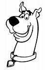
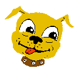
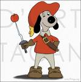

Scooby-Doo
Scooby-Doo es una popular serie de televisión animada estadounidense producida por Hanna-Barbera Productions (ahora Cartoon Network Studios) en múltiples versiones desde su estreno por CBS en 1969, hasta el presente.
El formato del programa y el elenco han cambiado significativamente a lo largo de los años. Las versiones más conocidas incluyen a un perro de raza gran danés parlante llamado Scooby-Doo y a cuatro adolescentes llamados Fred Jones, Daphne Blake, Vilma Dinkley y Shaggy,
los cuales viajan a lo largo del mundo en una van llamada "La Máquina del Misterio" (Mistery Machine en su término original), por la cual se transportan de un lugar a otro resolviendo misterios relacionados con fantasmas y otras fuerzas sobrenaturales.
Al final de cada episodio, las fuerzas sobrenaturales tienen una explicación racional -generalmente un criminal que espanta a la gente para poder cometer sus crímenes -. Posteriores temporadas del programa presentaron variaciones en el tema sobrenatural, e incluyeron nuevos personajes, como el primo de Scooby, Scooby-Dum y su sobrino, Scrappy-Doo.
Scooby-Doo fue transmitido por primera vez en el período comprendido de 1969 y 1976, pues al término de éste fue trasladado a la cadena televisiva, ABC, la cual terminó cancelando el programa en 1986, presentando en su lugar un spin-off titulado Un cachorro llamado Scooby-Doo, entre 1988 y 1991.

Una nueva temporada titulada ¿Qué hay de nuevo Scooby-Doo?, fue transmitida en WB Television Network entre 2002 y 2005, siendo seguida por la más reciente, Shaggy y Scooby-Doo detectives, la cual ha sido lanzada por CW network desde el 2006. Actualmente, repeticiones de diversos capítulos y películas del personaje son transmitidas por Cartoon Network en Estados Unidos y otros países.
Entre los años 2004 y 2005, Scooby-Doo mantuvo el récord mundial Guinness como la serie animada con mayor número de episodios, siendo eventualmente superado por otras series estadounidenses

La verdadera lassie se llamaba Pal, era un perro que un día su dueño llevo a una escuela de adiestramiento para que le quitaran las “malas costumbres” de perseguir a los carros, la factura era cara y el hombre al no poder pagarla dejo en la escuela al Pal, ese perro se convertiría en la famosa lassie, en 1943 llego la primera película “lassie Come Home” con Elizabeth Taylor, el collie se convirtió en una estrella.
En 1954 nació la serie de televisión que interpretaron hasta 1974 los descendientes de Pal, gracias a lassie la raza collie consiguió una gran popularidad, incluso hoy a los collies se les sigue conociendo por lassie.
lassie viaja en aviones con su entrenador Rudd Weatherwax cuenta la siguiente anécdota en la decada de los sesenta en uno de los vuelos
"...El capitán anunció por el altavoz que había dos importantes personalidades de Hollywood a bordo. Primero nombró a una estrella de cine bien conocida y se produjo un tibio murmullo entre los pasajeros. Luego indicó que lassie también estaba en el avión, y todos en la cabina se pusieron de pie intentando ver dónde estaba el perro".
La historia de lassie trancurre en una granja familiar, cerca de la ciudad de Calverton, junto con el niño Jeff Millar y su madre viuda, Jeff y lassie correrían muchas aventuras, lassie se caracterizaba por su inteligencia, su valentía y nobleza, siempre ayudando a las personas que se encontrase en una situación difícil.
Los niños de la serie crecían, y la verdadera protagonista era lassie, por lo que los protagonistas humanos se sustituían por otros sin que la serie resultara dañada, estaba claro que los televidentes querían ver a la perra lassie.

D'Artacan y los tres mosqueperros, o Wanwan Sanjushi en Japón, es una serie de dibujos animados basada en la obra Los Tres Mosqueteros de Alejandro Dumas pero con un estilo cómico. Los personajes son representados por animales (casi todos perros).